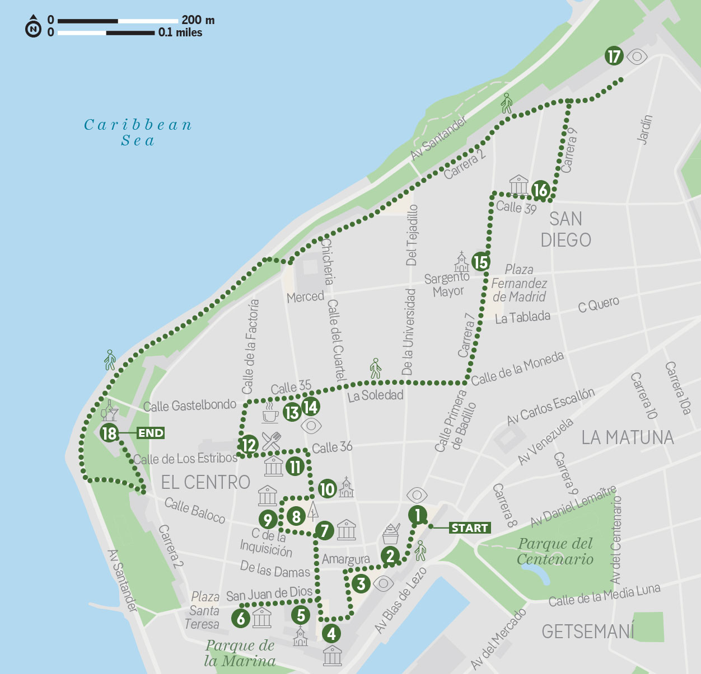

📖 Lonely Planet — "If You Only Do One Thing"
✈️ Vlucht Medellín → Cartagena
Korte vlucht van de luchthaven Olaya Herrera (MDE) naar Rafael Núñez International Airport (CTG). Boekingsnummer: 3C8F4V.
- Vlucht
- 3C8F4V
- Route
- MDE 20:20 → CTG 21:25
- Na aankomst
- Uber naar Hotel 3 Banderas Getsemane
- Van bushalte MDE
- ±1u met Uber
🚶 Wandeling door Historisch Centrum — kies je stijl

Ochtend door de UNESCO-binnenstad: koloniale architectuur, stadsmuren, bloemrijke balkons, Getsemaní. Twee gelijkwaardige opties — kies op de dag zelf.
🧭 Optie A — Free Walking Tour (guide, ±2u)
Groepsrondleiding met een lokale gids. Vertrek om 10u bij de Torre del Reloj. Twee uur door het historisch centrum en Getsemaní — kleurrijke balkons, stadsmuren, koloniale pleinen. Betaal een fooi aan het einde.
Voordelen: context en verhalen van een gids, geen voorbereiding nodig, sociaal.
Nadelen: groepstempo, vaste route, afhankelijk van gids-kwaliteit.
🗺️ Optie B — LP Zelfstandige Route (18 stops, eigen tempo)

Start: El Torre del Reloj (klokkentoren)
- Plaza de los Coches (vroegere slavenmarkt)
- Portal de los Dulces — lokale snoepjes kopen
- Plaza de la Aduana — beste plek voor een geldautomaat
- Museo de Arte Moderno Cartagena
- Santuario de San Pedro Claver
- Museo Naval del Caribe
- Museo del Oro Zenú — gratis, airco!
- Plaza de Bolívar
- Palacio de la Inquisición (Museo Historico)
- Catedral de Santa Catalina de Alejandría
- Casa de Alba — verblijf Sir Francis Drake (1572)
- Plaza Santo Domingo — La Gorda Gertrudis van Botero
- Ábaco Libros y Café — koffiepauze
- Calle de la Iglesia — mooiste foto van de kathedraalkoepel
- Iglesia de Santo Toribio
- Plaza San Diego — inspireerde García Márquez
- Las Bóvedas — voormalige gevangenis, nu souvenirwinkels
- Einde: Café del Mar — cocktail bij zonsondergang op de stadsmuren
Voordelen: eigen tempo, stoppen waar je wil, geen groep.
Bron: Lonely Planet Colombia 10e editie · Kaart © Lonely Planet
🏖️ Strand & Avondeten

Relaxen op het strand. 's Avonds eten bij de Terraza Municipal — een soort foodmarkt aan het water met geweldige sfeer. Wandelafstand van het hotel (18 min). 👨🦳 Bestel er een Cazuela de Mariscos — romige Caribische visstoofpot met garnalen, kreeft en chipi chipi, geserveerd met kokosrijst en bakbanaan. Tony at iets gelijkaardigs aan de Caribische kust.
🚌 Chiva Rumbera — Party Bus
De kleurig geschilderde open bus is een Cartagena-icoon: een rijdend carnaval met open bar, kleine dansvloer en live reggaeton of band aan boord. Na 2u rondjes door de verlichte stad word je afgezet bij een nachtclub om verder te feesten. Uniek en gezellig!
🎫 Boeken via GetYourGuide of Viator
🏰 Castillo de San Felipe de Barajas

Het indrukwekkendste fort van Zuid-Amerika. Een kolossaal 17e-eeuws Spaans fort bovenop een heuvel met een doolhof van tunnels. Bezoek 's ochtends voor de hitte.
📖 Lees meer: 🏰 Castillo San Felipe →🏝️ Rosario Eilanden ÓÓÓF 🌋 El Totumo Vulkaan

Twee geweldige opties — kies één of wissel met dag 12.
💡 Optie B — El Totumo Vulkaan: Modderbad in een kleine, lauwwarme vulkaan. Unieke ervaring! Halve dagtrip. Boeken via lokaal touroperator.
Rosario Eilanden — detail & boeking
Vier eilanden tour: De tour bezoekt meerdere eilanden in de Rosario-archipel, een nationaal park voor de kust van Cartagena. Wit strand, heldere zee, snorkelen bij koraalriffen.
Vertrek: De boten vertrekken vroeg (7-8u) vanuit Muelle Turistico de la Bodeguita. Boek via GetYourGuide of via het hotel.
Meenemen: Zonnecrème (bioreafbreekbaar voor het koraal), zwemgerei, cash voor drankjes op de eilanden, reisdocument.
- Prijs
- ±€52 p.p.
- Duur
- Hele dag
- Boeken
- GetYourGuide of hotel
- Tip
- Bioreafbreekbare zonnecrème meenemen — vereist in het nationaal park
El Totumo Vulkaan — modderbad detail
Wat is El Totumo? Een 15 meter hoge mini-vulkaan gevuld met lauw, mineraalrijk modder. Je kunt erin zwemmen — de modder is zo dik dat je er bijna op drijft. Een van de meest bijzondere ervaringen van Colombia.
Praktisch: Halve dagtrip (ochtend beter). Daarna wassen in een nabijgelegen meer. Breng oude badkleding mee — de modder kleurt sterk.
- Afstand
- 45 min van Cartagena
- Duur
- Halve dag
- Tip
- Ochtendtour aanbevolen (minder heet). Laat fototoestel of telefoon bij het hotel.
📌 Praktische noten Cartagena
LP + RG topkeuze. Koloniale luxe met originele fresco's, gietijzeren bedden, buitenzwembad en dakterras. Een van de mooiste hotels van Cartagena.
🌐 hotelcasasanagustin.com 📋 Booking.comLuxe 4-ster boutique hotel met schilderachtige binnenplaats, waterpartijen en marmeren bogen. Centraal in de Old Town.
🌐 casapombo.comStijlvol hedendaags boutique hotel in Getsemaní — iets goedkoper dan de Old Town hotels, met daktuin en zwembad. Modern design met verticale tuin.
🌐 arsenalhotel.comSociaal hostel in San Diego, met dorms en privékamers rond een binnenplaats. Incl. ontbijt. Ideaal als je andere reizigers wil ontmoeten.
🌐 elviajerohostels.com 📋 Booking.com